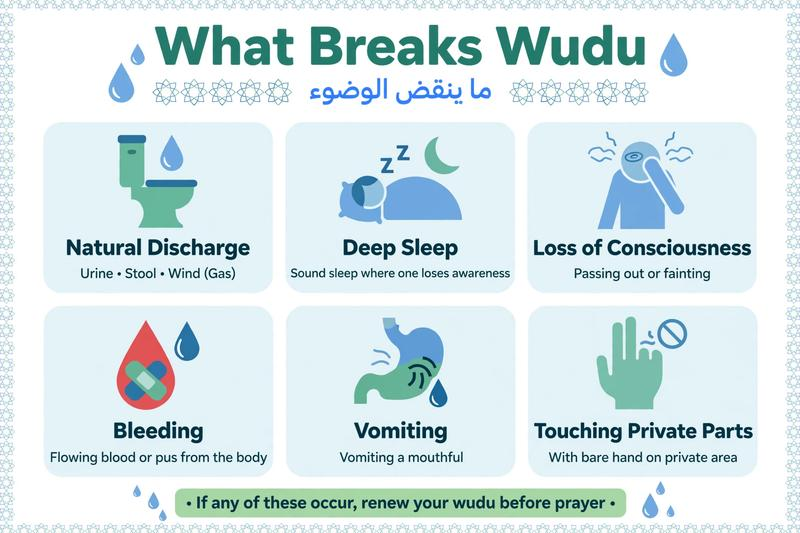

What Breaks Wudu? 8 Things That Nullify Your Wudu in Islam

Do you have wudu or not? This is the most common question for every new Muslim and even for those who have been praying for years. Understanding what breaks wudu is essential because you cannot pray without valid wudu.
In this simple guide, we will explain the 8 things that nullify wudu with evidence, what does NOT break wudu (a common confusion), and how to renew your wudu quickly.
Table of Contents
- What is Wudu and Why Does It Break?
- 8 Things That Break Wudu in Detail
- What Does NOT Break Wudu?
- How to Renew Your Wudu Quickly
- FAQs
What is Wudu and Why Does It Break?
Wudu is ritual purification that every Muslim must perform before Salah. Allah says: "O you who have believed, when you rise to [perform] prayer, wash your faces and your forearms..." [Quran 5:6]. Wudu breaks when something impure exits the body or consciousness is lost. If you are traveling or have no water, you can do Tayammum when there is no water instead.
8 Things That Break Wudu (Nawaqid al-Wudu)
Scholars agreed on these nullifiers based on Quran and Sunnah:
1. Anything Exiting from the Two Private Parts
This includes urine, stool, wind (passing gas), and pre-ejaculatory fluid. The Prophet ﷺ said: "Allah does not accept prayer of anyone of you if he does hadath (passes wind) till he performs the ablution again." [Bukhari & Muslim].
2. Deep Sleep
If you sleep deeply and lose consciousness, wudu breaks. Light dozing while sitting without leaning does not break wudu according to many scholars.
3. Loss of Consciousness
This includes fainting, insanity, intoxication, or any reason you lose control of yourself.
4. Touching Private Parts with Desire (Direct Skin Contact)
Many scholars consider touching the private parts without a barrier breaks wudu. The Prophet ﷺ said: "Whoever touches his private part, let him perform wudu." [Ahmad, Abu Dawud]. Some scholars say it is recommended, not obligatory, if without desire.
5. Eating Camel Meat
Based on authentic hadith, eating camel meat breaks wudu. Jabir bin Samurah reported that a man asked the Prophet ﷺ, "Should I perform wudu after eating camel meat?" He said, "Yes." [Muslim].
6. Vomiting in Large Amount, Bleeding, or Pus
According to Hanafi school, flowing blood, heavy bleeding, or copious vomiting breaks wudu. Other schools consider it does not break wudu unless it exits from private parts.
7. Apostasy (Leaving Islam)
If a person commits an act of kufr, his wudu is nullified and he must repent and renew purification.
8. Doubt vs Certainty
If you are certain you had wudu and doubt whether it broke, your wudu is still valid. The principle in Islam: Certainty is not removed by doubt.
📚 Continue Your Taharah Journey
After understanding what breaks wudu, you need to learn the next steps of purification:
What Does NOT Break Wudu? (Common Myths)
Many people think these break wudu, but they do NOT:
- Touching a woman (your wife): Does not break wudu according to the strongest opinion, unless with desire and fluid discharge.
- Bleeding from a small cut: Does not break wudu in Shafi'i and Maliki schools.
- Vomiting a small amount: Does not break wudu.
- Doubts and whispers (waswas): If you are not sure you passed wind, your wudu is valid.
- Smoking: Haram, but does not break wudu (you should rinse mouth for cleanliness).
How to Renew Your Wudu Quickly
If your wudu broke, you must redo it before praying. It takes only 1-2 minutes:
- Make intention (niyyah) in your heart.
- Wash hands, mouth, nose, face, arms, wipe head, wash feet as you learned in wudu guide.
- If you are in a state of major impurity (janabah, menstruation), you need Ghusl, not just wudu.
- If there is no water available, perform Tayammum.
📚 Explore All Our Purification & Salah Guides
Frequently Asked Questions
Does passing gas break wudu?
Yes, passing wind/gas from the back passage breaks wudu. You must perform wudu again before praying. Learn the full wudu process in our wudu step by step guide.
Does touching private parts break wudu?
According to many scholars, touching private parts with bare hand without a barrier breaks wudu. If touched with desire, you should renew wudu.
Does sleeping break wudu?
Deep sleep where you lose consciousness breaks wudu. Light napping while sitting upright without leaning does not break wudu according to many scholars.
Do I need ghusl or just wudu?
Wudu is for minor impurity. Ghusl (full bath) is required for major impurity like janabah, after intercourse, or menstruation. Read our complete guide: How to Do Ghusl in Islam.
What if there is no water to make wudu?
If no water is available or you cannot use water due to illness, Islam allows Tayammum (dry ablution) with clean earth/dust. See how to do tayammum when no water.